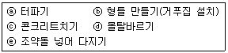

조경산업기사 (2002-03-10 기출문제)
1과목: 조경계획 및 설계
1. 적지선정을 위하여 도면 결합법(overlay method)을 제시한 사람은?
- 힐(Hill)
- 맥하그(McHarg)
- 린치(Lynch)
- 레오폴드(Leopold)
(정답률: 63%)

2. 도시의 팽창 및 확산을 억제하는데 가장 효과적인 녹지계통은 어느 것인가?
- 환상형(環狀型)
- 방사형(放射型)
- 위성식(衛星式)
- 점재형(點在型)
(정답률: 56%)
3. 완충녹지의 식재에서 잘못된 것은?
- 입지조건에 알맞는 수종을 선택한다.
- 중심수목(中心樹木)은 낙엽 활엽 교목으로 구성한다.
- 완충녹지의 양 가장자리는 관목을 식재한다.
- 비료목을 혼식 한다.
(정답률: 45%)
4. 건축법에 의하여 건축을 하는 경우 건축조례에 정한 기준으로 식수등 조경의 필요조치를 해야하는 원칙적인 대지면적 기준은?
- 165m2 이상
- 200m2 이상
- 255m2 이상
- 300m2 이상
(정답률: 58%)
5. 연간 이용자수가 36,000명, 최대일률 1/60, 시설개장시간 8시간, 평균체재시간 4시간인 시설지의 최대시 이용자수는?
- 300명
- 600명
- 1200명
- 3000명
(정답률: 50%)
6. 지형은 거시적(macro)인 것과 미시적(micro)인 면으로 파악되는데, 미시적인 지형조사가 필요한 계획은?
- 자연의 보전, 보호계획
- 토지이용계획
- 휴양지 개발계획
- 관광정비계획
(정답률: 63%)
7. 골프(Golf)장 홀(hole)의 구성이 아닌 것은?
- 티(Tee)
- 파(par)
- 페어웨이(fair way)
- 라프(rough)
(정답률: 72%)
8. 학교의 옥외 공간에서 학생들이 학교생활 중 단시간(短時間)에 가장 많이 이용하는 곳은?
- 전정구역(前庭區域)
- 후정구역(後庭區域)
- 측정구역(側庭區域)
- 운동장구역
(정답률: 34%)
9. 공장 조경계획에 대한 설명이다. 옳지 못한 것은?
- 공장 구성원의 휴식 수요 조사와 기업선전 효과 예측조사를 한다.
- 공장의 전정구(前庭區)는 상징적으로 하여야 한다.
- 공장의 성격과 주변지역의 상황을 충분히 조사하여야 한다.
- 주거시설구의 위치는 생산시설구와 인접하여야 한다.
(정답률: 77%)
10. 강물이나 계곡 또는 길게 뻗은 도로와 같이 거리가 멀어짐에 따라 시선을 집중 시키며 관찰자의 위치에 따라 집중적인 효과를 나타내는 경관은 다음 중 어느 것인가?
- 파노라믹한 경관(Panoramic landscape)
- 세부적 경관(detail landscape)
- 초점적 경관(focal landscape)
- 위요된 경관(enclosed landscape)
(정답률: 75%)
11. 공간 구성에 있어 수직적 요소가 갖는 기능 중 옳지 않는 것은?
- 기준점(a point of reference)이 된다.
- 공간을 분할한다.
- 조절적인 요소로서의 역할을 한다.
- 수직면은 구조물과 가장 큰 연관성을 갖는다.
(정답률: 30%)
12. 먼셀(Munsell)의 무채색 명도 단계에 해당하는 것은?
- 10(흑)-20(백), 회색을 11에서 19까지 9단계
- 0(흑)-10(백), 회색을 1에서 9까지 9단계
- 1(흑)-14(백), 회색을 2에서 14까지 12단계
- a(백) cegilnp(흑), 회색 6단계
(정답률: 66%)
13. 아파트 단지의 보도 경사는 어느 정도가 알맞는가?
- 5% 이내
- 8% 이내
- 10% 이내
- 12% 이내
(정답률: 52%)
14. 다정에서 발달하여 일본정원의 주요 점경물로 오늘날까지 사용되고 있는 것은?
- 석등과 삼존석
- 수미산과 세수분
- 석등과 세수분
- 세수분과 삼존석
(정답률: 63%)
15. 이슬람 정원양식의 특징과 관련이 가장 적은 것은?
- 인물, 동물의 조각물을 많이 사용
- 관개시설의 형태를 따를 기하학적 형태
- 진흙이나 구운 벽돌로 두른 높은 울담설치
- 녹음수, 정원식물에 대한 동경과 사랑을 표현
(정답률: 72%)
16. 백제사람 노자공(路子工)이 일본의 아스까시대에 만들었다고 하는 정원의 시설물은?
- 소여산(小廬山)과 원월교(原月橋)
- 은사탄(銀沙灘)과 향월대(向月臺)
- 수미산(須彌山)과 오교(吳橋)
- 야박석(夜泊石)과 봉래섬(蓬萊島)
(정답률: 74%)
17. 아미산원에 관한 설명이다. 맞지 않는 것은?
- 계단식으로 다듬어 놓은 화계를 이용한 정원공간이다.
- 화목사이로 괴석과 세심석이 놓여있다.
- 창덕궁 후원으로 사적인 성격의 공간이다.
- 온돌의 굴뚝을 화계 위로 뽑아 점경물로 삼았다.
(정답률: 62%)
18. 조경계획의 기본과정 중 설계발전 및 시행의 단계로서 기본계획에 해당하는 사항은?
- 시설물 설계도
- 공사계획평면도
- 토지이용 및 동선체계
- 수량산출 및 일위대가
(정답률: 54%)
19. 조경계획 과정에 있어 대안 작성을 위한 개념도(concept plan)와 관련이 없는 항목은？
- 동선계획에 관한 대안
- 토지이용계획에 관한 대안
- 집행계획에 관한 대안
- 시각적 형태에 관한 대안
(정답률: 58%)
20. 건물 입구에 전이 공간을 두어 완만한 변화를 주는데, 그 형성 방법으로 적당하지 않은 것은?
- 식물재료, 벽, 인위적인 지형 축조, 분명한 포장패턴 등으로 건물 입구를 부분적으로 윤곽 지음
- 1층 입구부분 위에 2층의 바닥을 연장
- 건물 내부의 높이로 연장한 후 계단을 설치
- 옹벽이나 담을 건물 재료로 계속 연결
(정답률: 55%)
2과목: 조경식재
21. 다음 중 지피식재 효과가 아닌 것은?
- 유하수(流下水)로 인한 세굴(洗掘)현상 방지
- 온도 교차의 완화와 서릿발 형성 억제
- 진입에 의한 위험과 답압방지
- 바람이 일기 쉬운 곳의 모래.먼지방지(砂塵防止)
(정답률: 40%)
22. 식재기능을 크게 공간조절, 경관조절, 환경조절로 나눌 경우 환경조절에 해당되는 식재 종류는?
- 녹음식재
- 지표식재
- 차폐식재
- 유도식재
(정답률: 56%)
23. 건축물 전정(前庭)의 기초식재시 구체적인 식재기법에 해당되지 않는 것은?
- 초점식재
- 모서리식재
- 배경식재
- 표본식재
(정답률: 47%)
24. 상록활엽 관목으로 우리나라에 1과(科),1속(屬),1종(種)으로 귀한 수목은?
- Pittosporum tobira AITON
- Viburnum awabuki K.KOCH
- Ternstroemia japonica THUNB.
- Camellia japonica L.
(정답률: 42%)
25. 다음은 Magnolia의 생리적 특성을 나타낸 것이다. 틀린 것은?
- 전정을 해주면 좋다.
- 약산성토양에서 잘 자란다.
- 집단식재를 피한다.
- 뿌리가 약해 강한 답압을 피한다.
(정답률: 40%)
26. 다음 중 자연풍경 식재의 기본 패턴은?
- 일대식재(一對植栽)
- 열식
- 교호식재
- 부등변 삼각식재
(정답률: 63%)
27. 비탈면 식재에 관한 내용으로 옳은 것은?
- 비탈면의 경사가 1 : 2 보다 급한 경우에 수목식재가 좋다.
- 안전성을 위해 절토면은 하단부에, 성토면은 상단부에 식재하는 것이 바람직하다.
- 조화로운 경관을 위해 수목은 일직선으로 식재하는 것이 좋다.
- 비탈면 식재의 목적은 아름다운 자연경관의 조성과 법면 보호이다.
(정답률: 52%)
28. 식재설계시 고려되는 물리적 요소인 것은?
- 조화
- 색채
- 통일
- 스케일
(정답률: 29%)
29. 붉은색의 열매를 갖는 수종으로 짝지은 것은?
- 산수유, 사철나무, 주목
- 쥐똥나무, 좀작살나무, 뽕나무
- 모과나무, 명자나무, 배나무
- 은행나무, 탱자나무, 붉은나무
(정답률: 62%)
30. 다음은 지피식물(Ground cover)이 갖추어야 할 조건에 대한 설명이다. 이 중 적당치 않은 것은?
- 다년생 식물이면서 상록성이면 더욱 좋다.
- 생장속도가 빠르고 번식력이 왕성할수록 좋다.
- 포기로 자라는 식물이 지하경이나 포복경으로 자라는 식물보다 나지(裸地)를 남기지 않으므로 좋다.
- 낮은 키를 가진 식물이 좋다.
(정답률: 45%)
31. 아파트 단지 식재 계획의 내용이다. 옳지 않은 것은?
- 전체 경관을 변화속에 통일감이 있도록 한다.
- 간선도로와 인접한 곳은 완충식재를 한다.
- 보행자 공간에는 녹음수를 많이 식재를 한다.
- 요소 요소에 방풍식재를 한다.
(정답률: 40%)
32. 다음은 법면의 라운딩(rounding)에 대한 설명이다. 이 중 적합하지 않은 것은?
- 법면이 풍기는 인공미를 감축시키기 위해 쓰는 방법이다.
- 법면에 대한 라운딩효과를 얻기 위해서는 라운딩된부분의 곡선의 길이가 직선부의 길이 보다 길어야 한다.
- 법면 하단부의 라운딩은 지형이 한층 더 완만해 보이고 낙석(落石)의 위험이 적어지므로 효과적이다.
- 라운딩의 형태로는 원호 또는 포물선형이 많이 쓰인다.
(정답률: 33%)
33. 내조성(耐潮性)이 강한 수종은 어느 것인가?
- 독일 가문비
- 소나무
- 비자나무
- 삼나무
(정답률: 41%)
34. 지표종 또는 지표(指標)식물에 대한 설명으로 맞는 것은?
- 특정 수준의 단일오염 하에서 여러 가지 생리적 반응을 특징적으로 나타낼 수 있다.
- 오염에 대한 위험을 조기에 알 수 있다.
- 지의류(地衣類)는 이산화탄소의 대표적인 지표종이다.
- 소나무는 이산화탄소의 대표적인 지표종이다.
(정답률: 27%)
35. 산성 토양에 비교적 잘 자라는 나무는?
- 철쭉, 진달래류
- 꽃아그배, 모과류
- 단풍, 명자나무류
- 은행나무, 사과나무류
(정답률: 57%)
36. 토양 수분이 많은 것을 요구하는 나무는?
- 은행나무
- 단풍나무
- 낙우송
- 피나무
(정답률: 62%)
37. 반송(槃松)의 학명은?
- Pinus densiflora var. multicaulis
- Pinus densiflora var. pendula
- Pinus densiflora var. erecta
- Pinus densiflora var. aggregata
(정답률: 91%)
38. 다음 중 도시내 건물 밀집지역의 조경식재 설계시 고려해야 할 사항과 가장 관련이 적은 것은?
- 열섬현상(heat island)
- 대기오염
- 탈염공법
- 지하구조물
(정답률: 52%)
39. 조경수 식재효과로 차폐식재 방법을 이용할 수 있다. 차폐식재에 대한 설명 중 잘못 기술된 것은?
- 매력적이지 못한 경관이나 대상을 시각적으로 가리는 것을 말한다.
- 차폐 대상물로서는 폐차장, 변전소, 공동묘지 등이다.
- 키가 높은 것보다 낮은 산울타리로 시공하면 효과가 높다.
- 시각적으로 격리, 제한, 은폐 역할도 겸할 수 있다.
(정답률: 52%)
40. 조경 공간을 형성할 때 조경가가 고려해야 할 조경대상환경에 대하여 기술하였다. 가장 중요하다고 생각되는 항목은?
- 일반 생물들의 삶 속에 형성되는 자연환경이다.
- 인간의 사회생활 속에 형성되는 사회환경이다.
- 대립관계에 있는 자연환경과 사회환경을 조화있게 고려해야 한다.
- 레크리에이션적인 환경이용이 중요하다.
(정답률: 42%)
3과목: 조경시공
41. 일위 대가표 계의 금액은 얼마까지 계산하는가?
- 10원 미만 버림
- 1원 미만 버림
- 0.1원 미만 버림
- 0.01원 미만 버림
(정답률: 47%)
42. 네트워크 공정표 중 더미(dummy)에 대한 설명으로 맞는 것은?
- 하나의 선행작업을 나타낸다.
- 가장 중요한 공정을 나타낸다.
- 선행과 후행의 관계만 나타낸다.
- 가장 시간이 긴 경로를 나타낸다.
(정답률: 46%)
43. AE제에 대한 설명으로 옳은 것은?
- AE제를 넣을수록 공기량은 감소한다.
- AE제를 사용한 콘크리트는 강도가 증가한다.
- AE제 공기량은 온도가 높아질수록 증가한다.
- AE제 공기량은 진동을 주면 감소한다.
(정답률: 33%)
44. 반력(reaction)에 관한 설명으로 맞는 것은?
- 하중이 작용하는 지점에는 반력이 생긴다.
- 구조물의 반력에는 수평반력과 수직반력 두 가지가 있다.
- 구조물은 반력과 합력에 의해 힘의 평형을 이룬다.
- 구조물의 외력이란 반력을 말한다.
(정답률: 44%)
45. 다음 중 수평부재가 아닌 것은?
- 도리(plate)
- 합성보(girder)
- 들보(stringer)
- 대공(stud)
(정답률: 33%)
46. 포장(paving)의 물리적 성질을 기술한 것 중 옳지 않은 것은?
- 포장(paving)은 기울기를 고려하여야 한다.
- 콘크리이트 포장(paving)은 빛을 반사한다.
- 포장(paving)은 유수량을 줄어 들게 한다.
- 콘크리이트 포장(paving)은 온도변화에 따라 수축과 팽창이 생긴다.
(정답률: 49%)
47. 축척 1/600 지도상의 면적을 잘못하여 축척 1/400로 측정하였더니 6,000m2가 나왔다. 실제 면적은 얼마인가?
- 7,600m2
- 9,260m2
- 13,500m2
- 18,420m2
(정답률: 36%)
48. 잔디(떼)나 잔디 종자를 심는 공법이 아닌 것은?
- 프러그 공법(Plugging)
- 평떼 공법
- 씨드 매트 공법(Seed mat)
- 캐이슨 공법(Caisson method)
(정답률: 55%)
49. 다음은 수목을 운반할 때의 주의사항에 대한 설명이다. 이 중 적당하지 않은 것은?
- 비포장도로로 운반할 때는 뿌리분이 충격 받지 않도록 완충재로 흙 또는 짚을 깐다.
- 수목과 접촉하는 고형부(固形部)에는 완충재를 삽입한다.
- 수송 도중 바람에 의한 증산을 억제하기 위하여 비닐천막지로 포장을 씌운다.
- 수목의 잎이 밀집되어 있는 부분은 물을 충분히 뿌려주어 잎이 마르는 것을 방지한다.
(정답률: 37%)
50. 다음은 골프장의 잔디 파종에 대한 설명이다. 이 중 적합하지 않은 것은?
- 파종면적이 넓을 때는 파종 면적을 세로로 분할하여반을 뿌리고 나머지 반은 가로로 뿌리는 것이 좋다.
- 파종 후 60-80kg의 무게가 1-1.2m의 넓이에 미치는 로울러로 눌러주는 것은 종자를 토양에 밀착시키므로 좋다.
- 종자의 50% 이상이 3mm 이내의 지표면에 존재하는 것이 잔디 발아에 가장 좋은 상태가 된다.
- 파종 후 지표면 위에 투명한 비닐을 깔아주게 되면 지표면의 온도가 지나치게 상승하고 통기성이 나빠 잔디가 발아하면서 죽게 된다.
(정답률: 38%)
51. 다음은 지하수위가 높은 곳에서 자라고 있는 수목을 굴취하고자 할 때 분뜨기 요령에 대한 설명이다. 이 중 가장 적합한 것은?
- 측근이 발달하고 있으므로 조개분을 뜬다.
- 뿌리가 골고루 발달하고 있으므로 원형분을 뜬다.
- 직근이 발달하고 있으므로 보통분을 뜬다.
- 뿌리가 얕게 퍼져있고, 직근이 없으므로 접시분을 뜬다.
(정답률: 35%)
52. 단위 시멘트 량이 300kg, 단위수량(水量)이 180kg 일 때 물시멘트비(W/C)는 몇 % 인가?
- 30%
- 40%
- 60%
- 80%
(정답률: 62%)
53. 다음 공사계약에 관한 내용 중 잘못된 항목은?
- 공사를 전문공사별, 공정별, 공구별 등으로 나누어 2인 이상에게 주는 도급을 공동도급이라 한다.
- 경력, 신용, 기술 등을 고려하여 수 명만 지적하여 입찰하는 것을 지명경쟁입찰이라 한다.
- 그 공사에 가장 적합하다고 인정되는 업자를 선정하여 공개입찰 없이 계약하는 것을 수의계약이라 한다.
- 입찰의 절차는 현장 설명을 끝낸 후 일정시간 경과 후에 행한다.
(정답률: 35%)
54. 일반적으로 3m 내외의 낮은 옹벽에 많이 쓰이는 형태는?
- 중력식(重力式)옹벽
- 캔티레버 옹벽
- 부축벽(扶築璧)옹벽
- 석축옹벽
(정답률: 47%)
55. 다음 설명 중 잘못된 것은?
- 모멘트의 단위는 ㎏ㆍm , tㆍm 이다.
- 모멘트는 모멘트 팔과 힘의 크기의 곱으로 구한다.
- 힘의 크기는 중량단위로 표시한다.
- 모멘트 부호는 회전방향이 시계방향일 때 (-)로 표시한다.
(정답률: 93%)
56. 다음 중 경량골재에 해당하는 것은?
- 부순자갈
- 중정석
- 바다모래
- 질석
(정답률: 35%)
57. 조경공간 내에서 벤치를 설치할 경우 공사 순서가 맞는 것은?

- ⓐ-ⓑ-ⓒ-ⓓ-ⓔ
- ⓐ-ⓒ-ⓑ-ⓓ-ⓔ
- ⓐ-ⓔ-ⓑ-ⓒ-ⓓ
- ⓐ-ⓔ-ⓒ-ⓑ-ⓓ
(정답률: 47%)
58. 덤프 트럭이 800m 지점에서 표토를 운반하려 한다. 적재시 운행 속도는 40Km/hr 이고 빈차시의 운행 속도는 공차시 보다 30% 증가한다면 평균 주행 시간은?
- 2.1분
- 5.4분
- 8.4분
- 12분
(정답률: 43%)
59. 다음은 도로의 포장면이 파괴되는 원인에 대한 것이다. 이 중 적합하지 않은 것은?
- 기층이 진흙으로 된 경우
- 지하수위가 높은 경우
- 겨울의 동상(frost heaving)현상이 있는 경우
- 포장면에 유연성이 없는 경우
(정답률: 43%)
60. 공사용 재료의 소운반 거리 산정시 직고 3m일 때에 수평거리는 얼마인가?
- 15m
- 18m
- 21m
- 24m
(정답률: 56%)
4과목: 조경관리
61. 잔디의 뗏밥주기에 관한 설명으로 바르지 못한 것은?
- 뗏밥은 가는모래 2, 밭흙 1, 유기물 약간을 섞어서 사용한다.
- 뗏밥은 일반적으로 가열하여 사용하며 증기소독, 화학약품 소독을 하기도 한다.
- 뗏밥은 한지형 잔디의 경우 봄, 가을에, 난지형 잔디의 경우 생육이 왕성한 6 - 8월에 주는 것이 좋다.
- 뗏밥의 두께는 잔디잎이 덮힐 10-15mm 정도로 주고 다시 줄 때에는 일주일이 지난 후에 바로 주어야 좋다.
(정답률: 42%)
62. 다음 공정표에 대한 설명 중 네트워크기법에 대한 설명이 아닌 것은?
- 설득성이 강하다.
- 중점관리를 할 수 있다.
- 숙련을 요한다.
- 간단한 공사에 자주 쓰인다.
(정답률: 35%)
63. 다음 중 유지관리 작업이 가장 용이한 포장공법은?
- 시멘트콘크리트포장
- 아스팔트포장
- 블록포장
- 타일포장
(정답률: 36%)
64. 운영관리업무의 수행방식의 하나로서 도급방식의 장점으로 볼 수 없는 것은?
- 규모가 큰 시설의 관리에 있어 효율적인 방식이다.
- 관리책임이나 책임소재가 명확하다.
- 전문가를 합리적으로 이용할 수 있다.
- 관리비가 싸게 되고 장기적으로 안정될 수가 있다.
(정답률: 27%)
65. 축구 경기장에서 잔디의 깎기는 어느 정도 높이로 하여야 가장 좋은가?
- 50㎜ - 60㎜
- 5㎜ - 10㎜
- 40㎜ - 50㎜
- 10㎜ - 20㎜
(정답률: 38%)
66. 다음은 잔디 생육에 필요한 영양원소이다. 생육의 필요한 원소 중 미량원소에 해당하는 것은?
- N(질소)
- Mn(망간)
- Mg(마그네슘)
- K(칼륨)
(정답률: 52%)
67. 100㎏비료의 포대에 영양분의 표시가 20-10-5로 표시된 비료의 인산(P2O2) 함량은 얼마인가?
- 5㎏
- 10㎏
- 20㎏
- 25㎏
(정답률: 47%)
68. 건물의 청소를 위해 적절한 청소 요원의 수를 결정하는 방법이 아닌 것은?
- 면적에 의한 방법
- 특정지역별 측정에 의한 방법
- 계량적 분석 방법에 의한 방법
- 이용자수의 측정에 의한 방법
(정답률: 35%)
69. 조경수목의 전정 요령에서 정부우세성(頂部優勢性)을 고려해야 한다. 다음 중 이 원칙을 올바르게 적용한 것은?
- 전정시 수목의 정단부를 무성하게 하기 위해 윗가지는 되도록 자르지 않는다.
- 윗가지는 강하게 자라므로 윗가지는 짧게 남기고 아래가지는 길게 남긴다.
- 대부분의 수목은 윗가지보다 아랫가지가 강하게 자라므로 아랫가지를 강전정한다.
- 전정작업시 아랫가지는 강하게 자라므로 윗가지를 소중히 다루고 우선적으로 보호한다.
(정답률: 42%)
70. 시설물 관리를 위한 페인트 칠의 방법으로 올바르지 못한 것은?
- 목재의 바탕칠시는 먼저 건조상태를 확인한다.
- 철재의 바탕칠시는 불순물을 제거후 바로 페인트칠을 한다.
- 목재의 갈라진 틈, 홈 등은 퍼티로 땜질하고, 24시간 후 초벌칠을 한다.
- 콘크리트면의 틈은 석고로 땜질하고 유성 또는 수성 페인트를 칠한다.
(정답률: 47%)
71. 조경관리시 관수에 대한 설명 중 알맞지 못한 것은?
- 관수 횟수는 일시에 충분히 주는 것보다 자주 주는 것이 좋다.
- 관수의 시기 판단은 식물을 주의 깊게 관찰하거나 토양상태를 관찰한다.
- 여름 고온시 기후가 건조할 때 잔디표면 근처에 소량의 물로 온도를 낮추는 것은 시린지(syringe)라 한다.
- 회전입상살수기는 물이 흐르면 동체로부터 분무공이 올라와서 관수하게 된다.
(정답률: 50%)
72. 초화류의 재배에 알맞은 토양조건이 아닌 것은?
- 배수성
- 통기성
- 보비성
- 점토성
(정답률: 55%)
73. 조경의 관리작업 항목에서 부정기적 작업 항목에 해당되는 것은?
- 점검
- 식물의 보식
- 수목의 손질
- 청소
(정답률: 45%)
74. 다음 중 유지관리의 일반적인 원칙으로서 가장 적합하지 않는 것은?
- 유지관리 비용은 가능한한 최소가 되도록 한다.
- 그 지역의 생태적 특성은 반드시 고려할 필요가 있다.
- 유지관리 비용을 낮추기 위하여서는 시공비용을 최소로 해야 한다.
- 유지관리상의 문제는 설계 및 시공의 단계에서도 고려되어야 한다.
(정답률: 45%)
75. 다음 중 주요 수목과 병해충이 틀리게 짝지어진 것은?
- 소나무 - 솔나방
- 낙엽송, 참나무류 - 집시나방
- 낙엽송, 섬잣나무 - 미국흰불나방
- 사과나무, 느티나무 - 독나방
(정답률: 49%)
76. 철재 접합부 용접의 경우 원칙적으로 용접을 행하여서는 안되는 기온은?
- 30℃ 이상
- 20℃ 이상
- 10℃ 이하
- 3℃ 이하
(정답률: 44%)
77. 식물의 동해 방지를 위한 방법 중 옳지 않은 것은?
- 철쭉류에 액체플라스틱의 시들음 방지제(Wilt-Pruf)를 잎에 살포한다.
- 근원경의 5~6배 넓이로 수목 주위를 피트모스 또는 낙엽을 깔아준다.
- 전나무 주변 토양은 0℃이하로 내려가기 전 흠뻑 젖도록 충분히 관수한다.
- 소나무의 경우 계속된 추위로 토양이 얼었을 때 미지근한 물로 1주일 간격으로 토양을 녹여준다.
(정답률: 50%)
78. 블록포장이나 보수시에는 모래가 사용된다. 포장면의 균일과 지지력을 향상시키기 위하여 이음새 폭을 두고 모래를 충진하는데 가장 적당한 이음새 폭은?
- 2㎝
- 5㎜
- 8㎜
- 10㎜
(정답률: 42%)
79. 아스팔트 포장이 균열되었거나 국부적 침하, 부분적 박리일 때의 보수방법은?
- 덧씌우기공법(overlay)
- 패칭공법(patching)
- 노면안정성 유지공법
- 배수처리공법
(정답률: 49%)
80. 잔디에서 질소비료를 과용할 때 많이 발생하는 병해는?
- 흰가루병
- 점무늬병
- 푸사륨 패치
- 탄저병
(정답률: 30%)